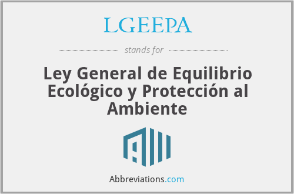

De La planificacion para el desarrollo de la legislacion ambiental en Mexico integra la planificacion del sector publico con
los problemas ambientales para asegurar el desarrollo sostenible, basandose en instrumentos como el Ordenamiento Ecologico,
que es un proceso participativo para regular el uso de los recursos naturales. Este proceso busca equilibrar las actividades
humanas y el medio ambiente, y se apoya en la participacion ciudadana, el desarrollo de programas de accion, el monitoreo y
la evaluacion continua, asi como en marcos legales como la LGEEPA.

Principios clave
Integracion: Se busca integrar la problematica ambiental en la planificacion del sector publico y privado.
Sostenibilidad: El objetivo principal es lograr un desarrollo sostenible que garantice un equilibrio entre las actividades humanas y
el medio ambiente.
Participacion ciudadana: La participacion de la sociedad y las comunidades es fundamental para aportar informacion y lograr acuerdos
en la toma de decisiones.
Instrumentos de planificacion
Ordenamiento Ecologico: Es un instrumento de planeacion adaptativo, participativo y transparente que define la vocacion del suelo y
regula el uso de los recursos naturales. Incluye fases de formulacion, expedicion, ejecucion, evaluacion y modificacion del programa.
Planes y programas: Se desarrollan planes a nivel nacional, como el Plan Nacional de Desarrollo, y programas especificos que
integran la opinion de la poblacion y de los sectores productivos.
Analisis de impacto ambiental: Se utilizan herramientas como el informe preventivo o la Evaluacion de Impacto Ambiental (EIA) para
prever y mitigar los impactos de obras y actividades.
Marco legal y desarrollo
Constitucion: La Constitucion Politica de los Estados Unidos Mexicanos establece en su articulo 4to el derecho a un medio ambiente
sano y el regimen de responsabilidad ambiental, y en otros articulos define la planeacion nacional y las facultades para legislar en
materia ambiental.
Leyes: La Ley General del Equilibrio Ecologico y la Proteccion al Ambiente (LGEEPA) es un pilar fundamental de la legislacion
ambiental en Mexico, estableciendo las bases para la regulacion y planificacion ambiental.
Normas Oficiales Mexicanas (NOMs): Estas normas son instrumentos tecnicos que establecen requisitos y lineamientos especificos
para diversas actividades y procesos productivos.
Desarrollo evolutivo: La legislacion ambiental ha evolucionado a lo largo del tiempo, incorporando reformas y nuevas demandas
sociales, como la descentralizacion de la administracion ambiental, la participacion ciudadana y los instrumentos economicos.